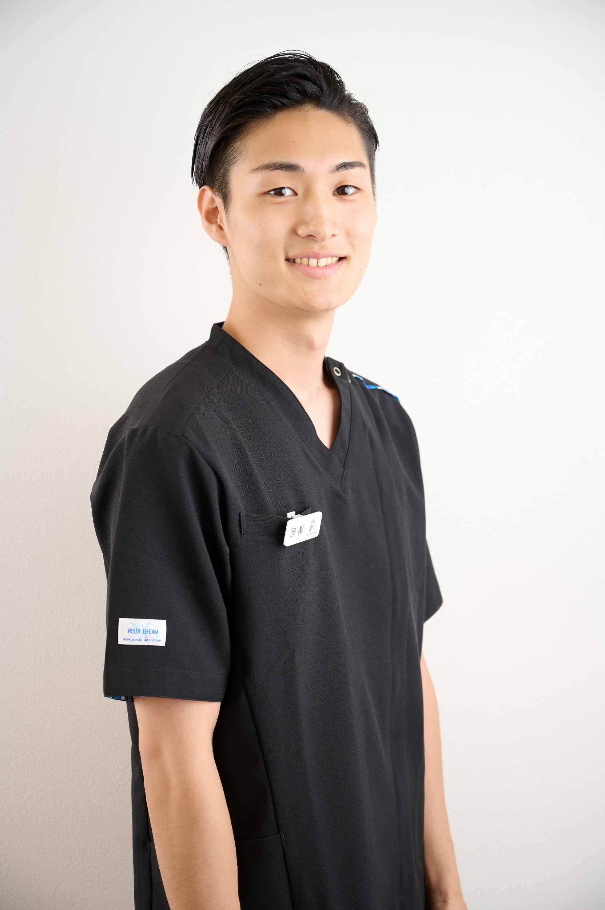
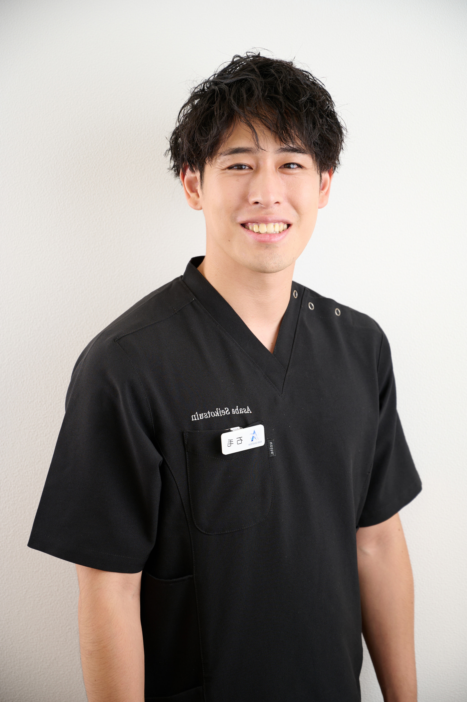
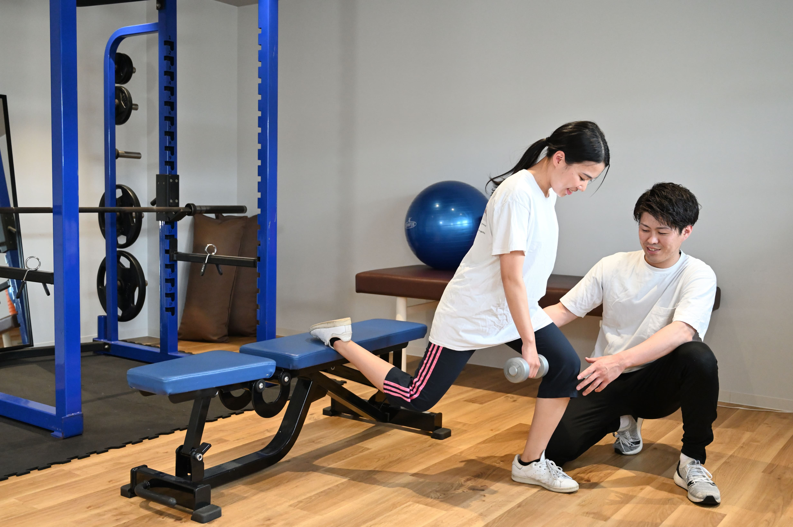
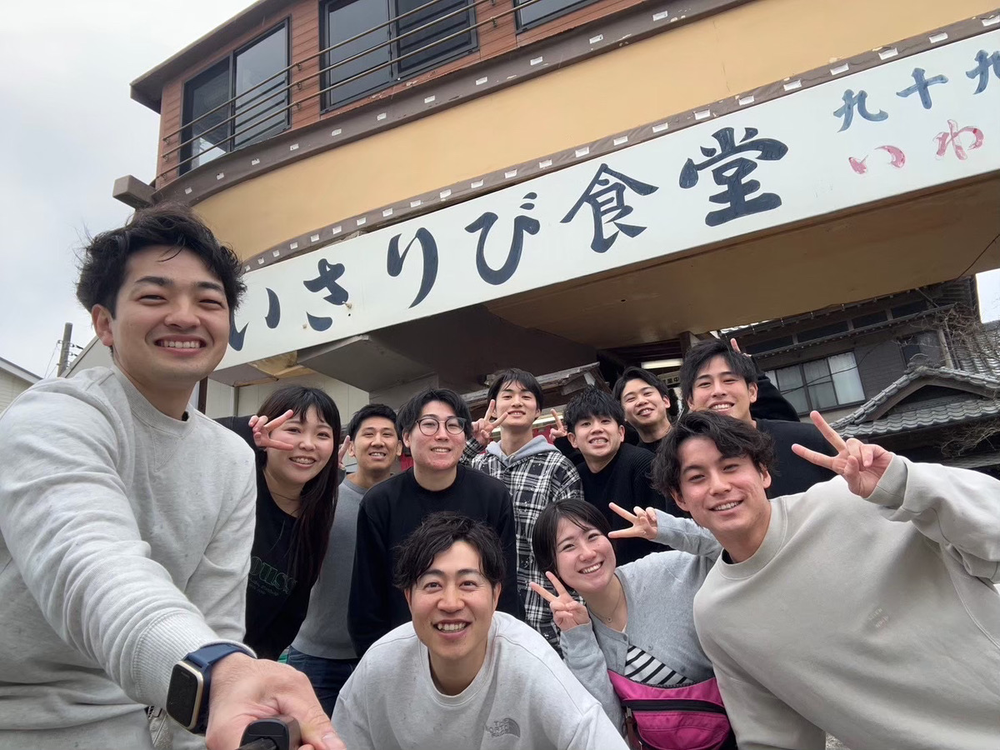

ジブンの理想
をカタチに

挑戦を続ける先輩たち
Interview
-
01

”患者さんを治したい”
そんなジブンの思いと一致した会社だった。2024年入職 蒔苗 由羽
-
02

スポーツトレーナーになるためにスキルアップしたい！
2023年入職 榎本 あい
-
03
今まで自信をもって施術できていなかったが、あさば整骨院でスキルアップし今では院長に
2023年入職 亀岡 海斗
-
04

”仕事と家庭を両立したい”
大手整骨院グループから転職し、理想のライフスタイルに2022年入職 宇田川 拓磨
-
05
整形外科クリニックから転職し、今は営業部長として活躍
2019年入職 石毛 赳
あさば整骨院で
未来を創れる理由
Reason
-
01
 -
CULTURE
"あなたの成長・理想を応援する文化"あさば整骨院では「スキルアップしたい」
→理学療法士が監修した教育カリキュラム「こんな患者のサポートをしたい」
→脳梗塞の患者専門のリハビリ施設の開業
インソールを作成できる設備設置
再発をしないための体づくりをサポートとしてトレーニングジムの開設というような
ジブンの理想をカタチにしてきた職場であるさまざまな経験による成長
理想を応援してくれる職場・スタッフ
それがあさば整骨院のculture
-
SKILL UP
"回す治療から治す治療へ"多くの整骨院は
・治療で患者を回すことで精一杯。
・遅い時間までの勤務で勉強する暇もない。
これが現実…。あさば整骨院では
理学療法士が監修した施術を教育カリキュラムとして採用。施術に自信がないのは
「的確な検査による判断ができない」
という原因がある。徹底的に検査法や施術を学び、どんな環境でも活躍できる人材を育てるカリキュラムでskill up
-
02
-
03
 -
LIFEWORKBALANCE
"仕事とプライベートの両立化"整骨院業界で多い
20時や22時までの営業あさば整骨院ではプライベートの時間も、とても大切だという考え、退社は18時30分が原則である。
では
なぜ、そんなに退社が早いのか？
それはプライベートでの家庭の時間やジブンの理想に近づくための時間（勉強や趣味など）として重要な1つだからである。効率的に仕事、充実したプライベート、それがあさば整骨院の考えるlifeworkbalance
募集要項
Job description
- 募集職種
- 柔道整復師・理学療法士・鍼灸師・あん摩マッサージ師・AT・OT
- 仕事内容
- 施術（整体・産後骨盤矯正・鍼灸）
トレーニング指導
カルテ入力など一般業務 - 雇用形態
- 正社員
- 給与
- 月給230,000円～350,000円
実績 施術スタッフ
年齢26歳 月給27万円 - 待遇・福利厚生
- 社会保険
ボーナス（実績に応じて支給）
昇給 年2回
通勤2時間以上の場合は引っ越し手当有（ただし社内規定あり） - 勤務時間
- 月～土 9：00～18：30（休憩90分、実質8時間
- 休日
- 年間休日最大122日
・定休日 日曜日、祝日
・シフト休 毎月好きな日にちを3～6日間選択
・夏季休暇3日
・年末年始4日 12/31～1/3
・有給休暇 - 勤務地
- ・〒270-0163
千葉県流山市南流山2－18－9 コーポN102
つくばエクスプレス・武蔵野線「南流山」駅より徒歩2分
・〒270-0111
千葉県流山市江戸川台東1－12－1 木村ビル1階
アーバンパークライン「江戸川台」駅より徒歩2分
・〒340-0822
埼玉県八潮市大瀬６－２－２エステートパレス６
つくばエクスプレス「八潮駅」より徒歩2分
場合により提携施設やトレーナー活動あり
よくある質問
Q&A
-
新卒の先輩たちが、入社前後で
ギャップを感じたポイントはありますか？採用では退勤時間が18時30分と書いてあったが、本当は残業があるのではと思っていました。だが、本当に18時30分になったら即退社する先輩方ばかりで最初は本当にびっくりしました。
また研修のカリキュラムも細かく、今まで外部の勉強会に行ったりもしていたが、カリキュラムを受けるだけでもう頭がいっぱいいっぱいで、毎日スキルアップしている実感があります！
-
あさば整骨院で活躍しているのは
どんな人ですか？行動力です！
新しいことを学んだり、新しいことにチャレンジすると頭デッカチになってしまい、行動力に欠けてしまうことが多いと思いますが、行動の多さが圧倒的な質や結果を出すことができます！
しかし、自分には行動力がない。なんて思う人もいるかもしれませんが、心配しないでください！
あさば整骨院ではスタッフ1人1人が先輩と面談をして自分の目標計画を立てることで行動しやすい環境を作っています！
自分1人で悩まず、一緒に頑張っていきましょう！ -
メンバーの成長・活躍を支援する
仕組みなどはありますか？あさば整骨院では人事評価制度があります。
人事評価では
施術スタッフ、院長、部長など様々なポジションがあり、スタッフの力量や行動評価に基づき公平かつ適正な能力を評価できる仕組みを採用してます！もちろん。
多少の年功序列もありますが、その人の能力値に合わせてポジションの昇進もスピーディーになることも十分にあり得ますので、頑張ったら頑張りに合わせた評価をされる評価制度でもあります！ -
どの店舗の配属になりますか？
店舗の配属については、希望の店舗をでの採用を基本としております。
店舗の状況やなどによって配属先は変更となる場合もあります。
配属先から自宅までが遠くなってしまう場合、会社から引越し費用の補助がありますので、ご相談をしていただければ対応しますので、ご相談ください。 -
採用にあたっての年齢制限はありますか？
基本ベースとしまして、30歳以下の採用を基本としております。
理由としまして、当社でのキャリアアップとしての計画などによるものとなります。
.jpg)
.jpg)
.jpg)